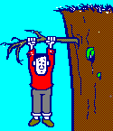
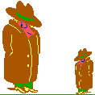

Depuis que vous confiez à des circuits électroniques le
soin de traiter, transformer, présenter, transmettre,
conserver les résultats de vos travaux, avez-vous bien pris
conscience de tous les événements fâcheux qui, un
jour ou l'autre, pourraient vous priver du fruit de vos cogitations ?
Pour vous aider à vous prémunir contre d'aussi
regrettables éventualités, le CNRS a mis en place un
réseau de correspondants de sécurité des
systèmes d'information dont l'animation incombe à
Michel Dreyfus. Une formation spécialisée a
déjà été proposée à la
plupart d'entre eux ainsi qu'aux responsables techniques de machines
ou de réseaux dans les Unités. Cet effort sera
poursuivi en 1995.
Ce bulletin doit devenir un lien entre tous ceux qui pensent qu'il
faut faire quelque chose et que l'expérience des uns doit
profiter aux autres.
Pour ceux, encore trop nombreux, qui ne sont pas encore convaincus
de l'intérêt des sauvegardes, des mots de passe et
autres précautions élémentaires, je voudrais
qu'il soit le révélateur des risques qu'ils font courir
à leurs propres travaux d'abord, mais également aux
travaux de leurs collègues.
Philippe Schreiber
Fonctionnaire de Défense

|
|
Trois fils !?
(histoire vécue)
|
Dans un laboratoire installé en des locaux vétustes,
il fut décidé de refaire l'installation
électrique. Mais, vu l'état des crédits, il
était impensable de faire appel à des professionnels.
Le magasinier étant connu pour ses talents de bricoleur, la
tâche lui fut confiée. Mais bricoleur ne veut pas dire
électricien. Et notre homme fut très surpris de
découvrir que derrière chaque prise arrivaient trois
fils.
Pour lui; deux étaient suffisants : l'un pour "amener" le
courant, l'autre pour le "remmener". Mais il était
consciencieux, et c'est avec soin qu'il câbla ce
troisième fil. Toutes les broches de masse des prises furent
donc connectées entre elles et à... rien d'autre.
Or il se trouva, à peu de temps de là, que
survinrent de grandes pluies qui inondèrent les locaux et
amenèrent quelques courts-circuits dans les sous-sols
d'où ils se propagèrent vers le reste de
l'installation. Par bonheur, ce fut au cours d'un week-end et il n'y
eut pas mort d'homme. Seules périrent quelques cartes
d'interface d'ordinateurs.
Ouf, pour cette fois, on s'en était tiré !
|

|
Une CERTaine idée de
la sécurité
|
Les CERT (Computer Emergency Response Teams) jouent maintenant un
rôle important dans la protection des systèmes
d'information, en particulier pour ceux qui sont connectés sur
les réseaux internationaux comme Internet.
Araignée, ma mie...
Aujourd'hui, la plupart des laboratoires du CNRS sont
câblés et leurs équipements informatiques sont
sur un réseau local raccordé, quelque fois via un
réseau de campus, à un réseau régional de
la Recherche, lui-même connecté à RENATER, lequel
est interconnecté avec les réseaux étrangers.
Cette structure en toile d'araignée se retrouve dans d'autres
pays et recouvre le monde entier : c'est Internet. Les quelque 30
millions d'utilisateurs de ce super réseau ont la
possibilité de communiquer avec n'importe quel autre poste de
ce réseau. Cette ouverture est la raison d'être
d'Internet et en fait un outil très puissant et performant,
spécialement pour les activités de recherche.
Comme tout outil, il est l'objet de convoitises et de menaces.
L'exemple le plus fréquent est celui d'un groupe de hackers
découvrant un trou de sécurité dans le
réseau qui leur permet de pénétrer
frauduleusement certains types de machines sans accréditation
préalable. Ils attaquent alors toutes les machines de ce type.
Sitôt cette intrusion découverte, il faut agir
très rapidement pour freiner la propagation de
l'épidémie. La prévention est difficile car on
ne peut garantir ni la bonne conduite d'un si grand nombre
d'utilisateurs ni l'absence de bogues dans les logiciels de
réseau. De telles attaques sont beaucoup plus
fréquentes qu'on ne le croit mais il n'est pas toujours bon de
les ébruiter.
D'où sort le CERT ?
Le 2 novembre 1988, des milliers d'ordinateurs connectés
sur l'Internet aux USA étaient attaqués par un
programme qui se propageait automatiquement sur le réseau en
exploitant une faille des logiciels. Par chance, ce "ver"
n'était pas d'inspiration maligne et n'opérait ni
destruction, ni espionnage, son concepteur étant
dénué de méchanceté. Par contre, une
foule d'utilisateurs "innocents" furent privés de leur outil
de travail pendant plusieurs dizaines d'heures.
Des experts de Berkeley et du MIT imaginèrent rapidement des
techniques d'immunisation et l'épidémie put être
stoppée. A l'époque, les liaisons étaient
effectuées à faible vitesse, ce qui eut l'heureux effet
de ralentir la propagation du ver. Ce ne serait plus pareil
aujourd'hui.
Pour éviter le retour d'une telle mésaventure, la DARPA
(Defense Advanced Research Projects Agency), à l'origine de
l'Internet, créait le premier CERT-CC (Coordination Center).
A quoi sert un CERT ?
Un CERT est en principe dédié à une
communauté bien définie, mais ne refuse
généralement pas d'aider les "extérieurs". Sa
fonction première est d'être LE point de contact, la
structure qu'on appelle à l'aide et qui organise les secours
en cas d'accident. Pour cela, il doit posséder une permanence
accessible 24 heures sur 24, sept jours sur sept. Il doit, en outre,
gérer une liste de responsables (ou correspondants) de
sécurité des instances gouvernementales, des organismes
de réseau, des autorités de police et des autres
CERT.
Un CERT doit aussi faire une première analyse technique du
problème en faisant appel, au besoin, à des techniciens
externes pour chaque type de matériels et de logiciels.
Lorsqu'un incident permet de découvrir un trou de
sécurité et que les experts ont trouvé la
parade, le CERT diffuse alors largement un avis public
décrivant sommairement le problème (sans, toutefois,
que cette description permette de reproduire l'incident) ainsi que la
correction détaillée ou les méthodes de
protection à mettre en place. Cette information est
généralement classifiée (rediffusion interdite,
restreinte, diffusion publique...)
Le problème se complique en raison des implications
internationales. Si, par exemple, un site des USA est victime d'une
attaque qu'il pense provenir de la Hollande, que doit-il faire ?
Après tout, la Hollande n'est peut-être qu'un tremplin,
et l'origine située ailleurs. Le site attaqué
prévient alors le responsable sécurité de son
organisme qui contacte le CERT de sa communauté, lequel
appelle le CERT hollandais... Sans être absolument au-dessus de
tout soupçon, les responsables de CERT sont néanmoins
fiables et peuvent pratiquer des recoupements pouvant amener à
une découverte rapide de l'origine réelle de
l'attaque.
Outre leur rôle de guérisseur, les CERT ont aussi un
rôle de prévention et de sensibilisation tant
auprès des responsables que des utilisateurs. Ils peuvent
aussi faire pression sur les constructeurs pour que ceux-ci
rectifient les lacunes, erreurs ou bogues de leurs logiciels et
matériels.
Il faut noter qu'un CERT ne se substitue jamais aux autorités
gouvernementales de police ou de justice. C'est au site
attaqué de déposer éventuellement une plainte.
Néanmoins, il maintient des contacts avec ces
autorités.
Un CERT est une petite équipe, mi-administrative,
mi-technique avec très peu de permanents, un
téléphone, une boîte à lettres
électronique, un carnet d'adresses bien rempli, des listes de
diffusion et un serveur d'informations (ftp anonymous ou www). Il est
financé et contrôlé par la communauté
qu'il dessert.
|

|
Un point faible des CERT est l'utilisation d'une
messagerie électronique non sécurisée
pour la plupart des échanges d'informations. Aux USA,
le CERT-CC est situé à l'Université
Carnegie-Mellon (Pittsburgh, Pa). Il est sponsorisé
par l'ARPA (Advanced Research Projects Agency) et compte une
dizaine de permanents et une centaine d'experts. Il assure
toutes les tâches que nous venons d'évoquer. Il
en existe d'autres comme le CIAC du Département de
l'Energie, le NASIRST de la NASA et l'équipe ASSIST
du DOD.
En Europe, l'administration de la recherche de la Hollande
et celle de l'Allemagne ont créé
respectivement CERT-NL et CERT-DFN qui semblent assez
actifs.
|
Et en France ?
En France, RENATER a récemment lancé un CERT qui est
déjà en contact avec les autres CERT mondiaux et
reçoit des notes d'information de ceux-ci ainsi que de
certains constructeurs comme SUN et HP. Il retransmet ces notes
à un contact sécurité réseau par
organisme fondateur de RENATER (CEA, CNRS, CNES, EDF, INRIA, ES).
L'auteur de ces lignes joue ce rôle pour le CNRS. Avec un seul
permanent (et encore, à temps partiel !), nos
possibilités sont réellement très
réduites. Pas d'assistance 24 h sur 24. Pas de groupe
d'experts. Néanmoins, ce CERT constitue un maillon de
sécurité très important pour les membres de la
communauté RENATER.
Avec d'autres CERT, il se retrouve au sein d'une petite structure
internationale : FIRST (Forum of Incident Response and Security
Teams) pour coordonner les actions communes et partages les
informations, l'expertise et les outils.
Depuis trois ans, j'ai commencé à créer un
réseau de correspondants techniques de sécurité
informatique avec un correspondant par point d'accès à
RENATER ou par gros laboratoire. Tout le monde n'est pas encore
représenté, mais il existe déjà quelque
120 correspondants inscrits dans une liste de diffusion
électronique servant de support à la transmission des
informations. Par ce moyen, il est possible de faire circuler les
avis en provenance du CERT RENATER, des CERT étrangers ou des
constructeurs.
Voici quelques exemples d'informations que j'ai ainsi pu diffuser
:
- Deux annonces de nouveaux virus sur MS DOS et Windows.
- Liste des derniers patches de sécurité de HP.
- Nouvelle version de tripwire, logiciel permettant de garantir
l'intégrité d'un système.
- Information sur une attaque par Transpac depuis l'Argentine et
l'Italie.
- Des patches de sécurité à appliquer sous
Ultrix pour boucher un trou de sécurité.
D'autres informations ont été envoyées au
seul site intéressé :
- Un fichier de mots de passe découvert sur un site
hollandais.
- Un fichier provenant d'une écoute de réseau
Ethernet en Allemagne et contenant des noms d'utilisateurs avec
leurs mots de passe concernant un laboratoire CNRS.
Finalement
Les CERT ne constituent pas la solution définitive à
tous les problèmes de sécurité provenant d'un
réseau extrêmement maillé, mais ils constituent
un outil peu coûteux qui peuvent rendre de gros services
à une importante communauté. Comme les pompiers, ils ne
peuvent faire la preuve de leur efficacité qu'en cas de coup
dur.
Personne ne souhaite qu'ils en aient l'occasion !
Jean-Luc Archimbault
Pour en savoir davantage :
Jean-Luc Archimbault peut être joint sur Internet :
jla@imag.fr
ou par téléphone : (16) 76 57 48 93.
Vous pouvez également consulter le répertoire
pub/securite/CERTs par ftp anonymous sur la machine
ftp.urec.fr
Ecrit par William R. Cheswick et Steven M. Bellovin, Firewalls
and Internet Security : repelling the wily hacker est une sorte
d'encyclopédie sur la sécurité d'Internet. Cet
ouvrage n'est pas une collection de recettes de craqueurs ou de
hackers (1) mais plutôt un inventaire des
menaces qui pèsent sur la tête des administrateurs de
réseau. Le "pare-feu" évoqué dans le titre,
c'est un système informatique spécialisé
intercalé entre le réseau et une installation ordinaire
et jouant le rôle de passerelle active, base de toute
défense. Base, certes mais il faut en faire davantage.
Et pour illustrer leur propos, les auteurs citent plusieurs
exemples détaillés d'attaques infructueuses. Les
gourous n'apprendront pas grand-chose, mais ceux qui ont en plus de
leur fonction habituelle la charge d'un réseau en tireront
grand profit. En annexe, une riche bibliographie et pas mal de tuyaux
pratiques renforcent le caractère pragmatique de cet ouvrage.
Le livre est publié par Addison-Wesley et on devrait
pouvoir se le procurer au Monde en tique, 4, rue Maître Albert
à Paris. Tél:(1) 43 25 45 20
1 : On désigne ainsi des petits génies aussi
malins que (souvent) malintentionnés qui cherchent à
craquer les défenses et protections des systèmes
informatiques.
|

|
La vérité sur Scan et
Clean
|
Scan et Clean sont les deux enfants chéris de McAfee. Le
premier détecte, le second éradique et, si possible,
répare. Qui est MacAfee ? C'est un éditeur d'antivirus
bien connus, principalement aux USA, parce qu'on trouve ses produits
sur presque tous les BBS(1). Et qu'ils sont
très régulièrement mis à jour, ce qui,
pour des antivirus, est la moindre des choses (voir le n 1 de
Sécurité Informatique).
De là à croire qu'il s'agit de logiciels en
freeware, c'est-à-dire à usage entièrement
gratuit, il n'y a qu'un pas à franchir. Pas que d'ailleurs
beaucoup ont à tort franchi. Malheureusement en contravention
avec la Loi ! Si, en effet, on examine de près la licence
d'utilisation de McAfee, on découvre que l'utilisateur
individuel (le home user) a le droit d'utiliser pour
évaluation les produits McAfee pendant 5 jours à titre
gratuit. Passé ce (très bref) laps de temps, il doit
soit les détruire, soit acquérir une licence
d'utilisation. Celle-ci est, aux USA, de 25 dollars pour le couple
SCAN/CLEAN (il y a d'autres produits dans le même domaine dont
nous ne parlerons pas ici). S'il a téléchargé
les logiciels d'un serveur (Internet ou autre), il n'y a rien d'autre
à payer. Sinon, il faut ajouter 9 dollars pour la disquette et
les frais d'envoi. Quant aux utilisateurs professionnels, qu'ils
relèvent du secteur public ou du privé, c'est la
même chose : ils doivent payer. Et payer tout de suite.
McAfee a un agent en France : VIF (Valorisation Informatique de
Fichiers), 16 rue de Bassano, 75116 PARIS) qui nous a fait une
proposition sur la base de 20 exemplaires (par exemple pour nos
correspondants régionaux) à 43 700 F HT pour deux ans.
Pour 3 000 postes de travail, c'est 199 000 F HT, avec, en plus, un
produit supplémentaire, Vshield. Pour 4 000 postes, on arrive
à 236 000 F HT, les mises à jour étant gratuites
pendant cette période par le 3614 VIF.
Individuellement, ça ne représente alors que 59 F HT
par poste. Mais qui pourrait décider, dans l'administration du
CNRS où les problèmes micro n'ont jamais
été globalisés, d'investir une telle somme ?
(Pas nous, hélas !)
1 : Bulletin Board Systems : sortes de messageries
privées très répandues même en France
utilisées aussi pour diffuser des logiciels.
Quoi de neuf sur le front des virus ?
Addison Wesley France a publié une traduction du livre de
Mark Ludwig The little black book of computer viruses sous le
titre Naissance d'un virus. Un distributeur français de
shareware les a traînés en justice sous le (fallacieux)
prétexte que cela pouvait nuire à son petit commerce.
Il a été non seulement débouté mais
condamné (en appel) à 20 000 francs de dommages et
intérêts envers A W pour préjudice moral. De nos
jours, on ne cherche heureusement plus à brûler
Galilée; l'obscurantisme recule, ce dont, au CNRS, on ne peut
que se féliciter.
Nous ne croyons pas que la diffusion de telles informations soit de
nature à favoriser la prolifération des virus. Les
virus sont comme les chiens : ils ne mordent que ceux qui ne les
connaissent pas, et savoir comment sont constitués les virus
est un moyen efficace de lutte contre eux. Pour avoir des
informations d'actualité sur les virus, consultez le F-PROT
Professional 2.13 update bulletin (Data Fellows Ltd.) qu'on peut
trouver sur Internet sous la forme compactée bull-213.zip (le
numéro croissant régulièrement), entre autres,
sur le serveur SimTel français :
Un ftp anonymous vous en rendra l'heureux détenteur.
Au revoir ....